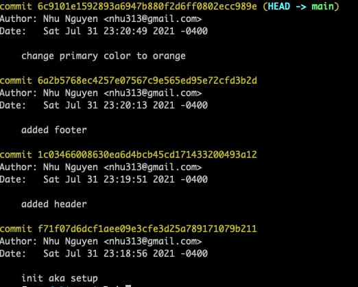
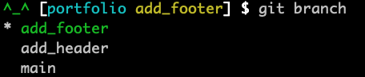

## Javascript ### - Git --- ## Git Git is an open-source, distributed version-control system. <p class="fragment"> It's a software that track changes to a folder/project. </p> --- ## Git - Versions - final.docx - final_final.docx - final_final_final.docx --- ## Git - Versions - final.docx `added all the content` - final_final.docx `fixed introductions` - final_final_final.docx `updated the charts` - final_final_final_final.docx `fixed conclusion` - final_font.docx `changed to a new font` --- ## Git - Repository A Git repository (aka repo) is <br />the `.git` folder that has all the saved versions <br />of the project. ``` my_app .git index.html style.css ``` --- ## Git - Repository #### What's the repo?<br /> The folder that contains <br />all the tracked files aka the project. ``` my_app .git index.html style.css ``` --- ## Git - Commit A commit is a version of the project.  --- ## Git - Initialize 1. Add git to your project - `git init` - only need to do this once --- ## Git - Commit 2. Save your changes (do this as often as you like) - `git add file_name` (stage a file) - `git commit -m "description of your changes"` --- ## Git - Commands - `git status` - list all the files that changed - `git add .` - add all the files (** dangerous **) - `git diff file_name` - show the file changes - `git diff` - show all the changes - `git log` - see all the commits - `git checkout file_name` - throw away the current changes - `git reset` - remove all files from staging --- # DEMO - git init - git diff - git commit --- ## Git - Branch A branch is a pointer to a commit, <br /> another version of the project. <img src="./../img/branch.svg" width="700" style="background-color: white;"> --- ## Git - Branch - Keep the main (trunk) branch clean (aka working) - Work on your feature without affecting others - Allow others to review your work - Allow you to test out different ideas --- ## Git - Branch Create a new branch ``` git checkout -b branch_name ``` Example: ``` git checkout -b add_header ``` `-b` is for creating a new branch --- ## Git - Branch Checkout (look at) another branch ``` git checkout branch_name ``` --- ## Git - Branch List all the branches ``` git branch ```  `*` the current branch --- ## Git - Branch Deleting a branch ``` git branch -d crazy-experiment ``` `-d` is for deleting --- ## Git - Merge Add other changes into the current branch ``` git merge branch_name git merge add_header ``` --- # DEMO - create branch - git branch - git merge branch - git merge conflict --- ## Git - Remote A remote is often an online host of your project (code). - local - your computer - remote - GitHub, BitBucket, etc... --- ## Git - Add remote Set your remote repo (only need it once) ```terminal git remote add remote_name link_to_your_project_online ``` Example: ```terminal git remote add origin https://github.com/nhucodes/portfolio.git ``` --- ## Git - Push Upload your changes ```terminal git push remote_name branch ``` Example: ```terminal git push origin main ``` --- ## Git - Fetch Download all the latest meta-data from the remote server. - new branch - new commits ```terminal git fetch remote_name ``` Example: ```terminal git fetch origin ``` --- ## Git - Pull Fetch and merge the branch ``` git pull remote_name branch_name ``` Example: ``` git pull origin add_header ``` --- ## Git - Other Commands - `git remote -v` - list all remotes - `git remote add remote_name remote_url` - add remote - `git remote remove remote_name` - delete remote --- # DEMO - add remote - list remote - git fetch/pull --- ## Git - .gitignore If you want to ignore a file/folder, add it to `.gitignore` ``` *.json out/ bin/ node_modules/ env ``` --- ## Studio - [Studio](https://education.launchcode.org/js-independent-track/chapters/git/studio.html) --- ## Resources - [Learn Git](https://www.atlassian.com/git/tutorials/learn-git-with-bitbucket-cloud) - [What is Git?](https://www.nobledesktop.com/blog/what-is-git-and-why-should-you-use-it) - [Git Cheatsheet](https://training.github.com/downloads/github-git-cheat-sheet/) - [Git Remote](https://git-scm.com/book/sv/v2/Git-Basics-Working-with-Remotes)